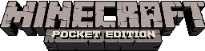

Klik salah satu blok untuk memasukkannya ke slot hotbar terpilih. Tutup dengan E atau tombol di pojok kanan atas.
Selamat datang di VoxelCraft.

Controls, graphics, and world settings for this browser game.
Score: 0